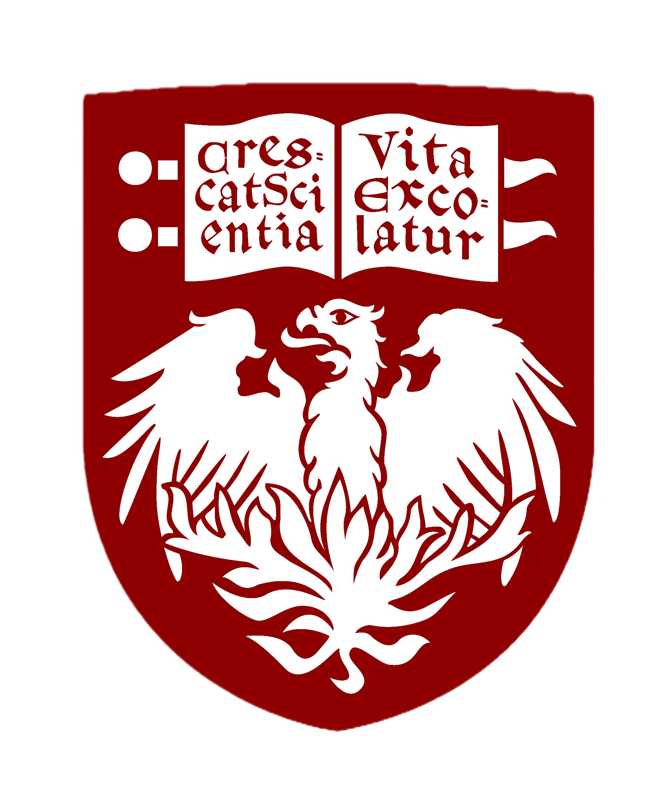
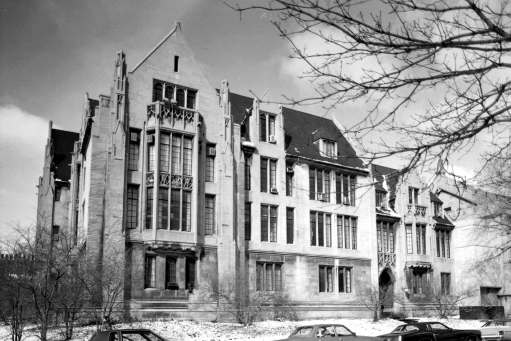

Supported by UChicago Math and the National Science Foundation
Dates: Nov. 2-3, 2024
Location: Kent Hall 120, Campus Map
Organizers: Peter May, Akhil Mathew, Tomer Schlank
Registration/Funding: The Midwest Topology Seminar has run since the mid 1960s. There is limited funding for available for participants, supported by the NSF. Please register for the conference here, and please indicate (before Oct. 15) if you would like to be considered for funding.
Participants will have to arrange their own accomodations. There are a few hotels in Hyde Park (such as the Hyatt Place Chicago-South/University Medical Center); less expensive options include Airbnb/Vrbo.
Options for lunch/coffee include:
Other recommended activities near the department include visiting the Institute for the Study of Ancient Cultures.